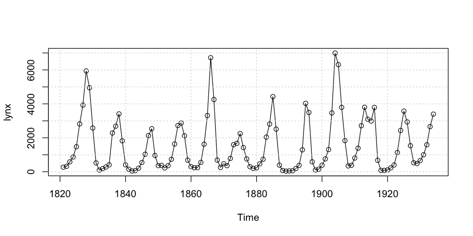
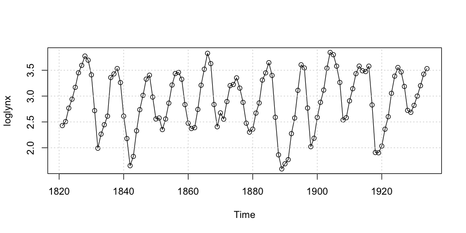
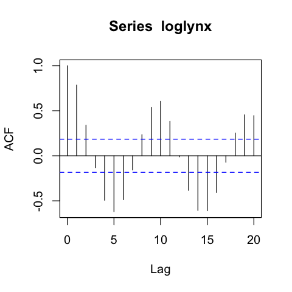
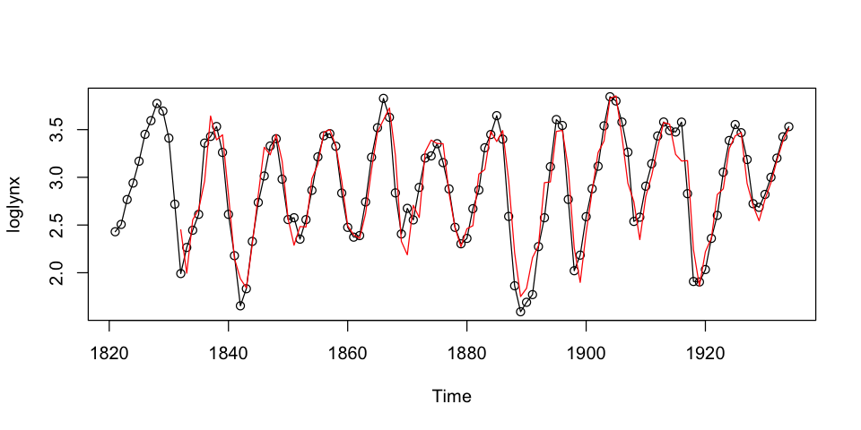
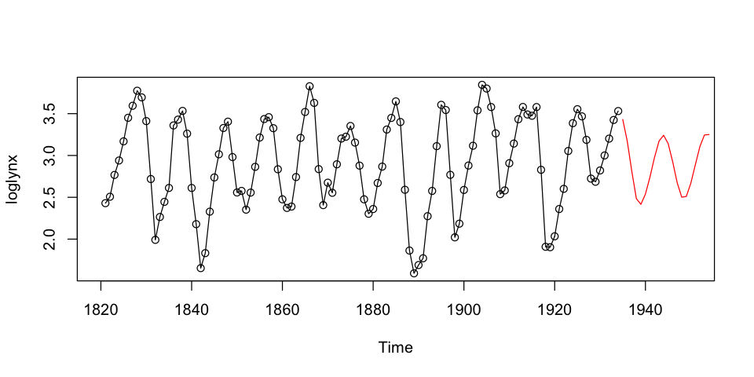
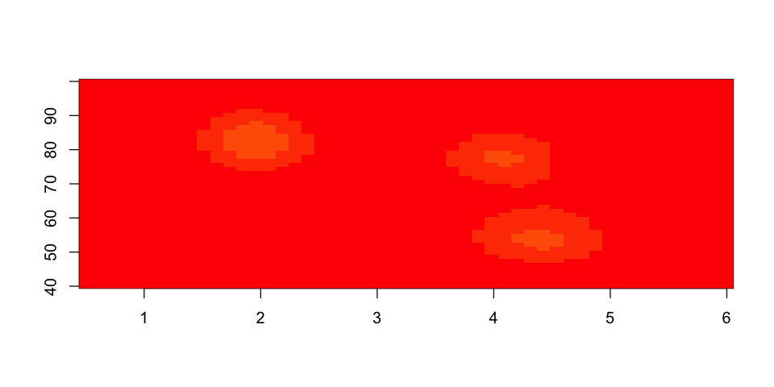
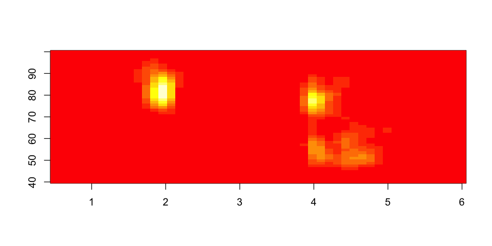
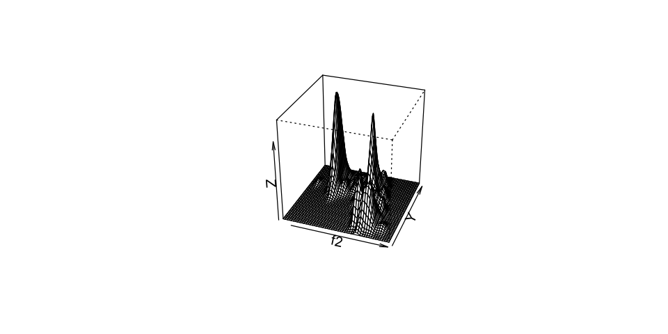

Análisis Exploratorio de Series de Tiempo¶
34:29 min | Ultima modificación: Marzo 21, 2021 | YouTube
[1]:
lynx
Time Series:
Start = 1821
End = 1934
Frequency = 1
[1] 269 321 585 871 1475 2821 3928 5943 4950 2577 523 98 184 279 409
[16] 2285 2685 3409 1824 409 151 45 68 213 546 1033 2129 2536 957 361
[31] 377 225 360 731 1638 2725 2871 2119 684 299 236 245 552 1623 3311
[46] 6721 4254 687 255 473 358 784 1594 1676 2251 1426 756 299 201 229
[61] 469 736 2042 2811 4431 2511 389 73 39 49 59 188 377 1292 4031
[76] 3495 587 105 153 387 758 1307 3465 6991 6313 3794 1836 345 382 808
[91] 1388 2713 3800 3091 2985 3790 674 81 80 108 229 399 1132 2432 3574
[106] 2935 1537 529 485 662 1000 1590 2657 3396
[6]:
options(repr.plot.width=8, repr.plot.height=4)
plot(lynx, type='o', lwd=1); grid()

[10]:
loglynx = log10(lynx)
plot(loglynx, type='o', lwd=1); grid()

[14]:
options(repr.plot.width=4, repr.plot.height=4)
hist(loglynx,breaks = 14 )
Ejercicio.– ¿Cuáles son los momentos de la distribución del histograma?, ¿máximo?, ¿mínimo?.
Ejercicio.– Grafique histogramas 3D para \(y_t\) y \(y_{t-k}\), con \(k=1,...,6\).
[ ]:
# estimado no parametrico de la E(yt|yt-i)
[ ]:
# estimado no paramétrico de la varianza
[15]:
acf(loglynx)

[16]:
pacf(loglynx)

[ ]:
[17]:
# tests de no linealidad
[38]:
# modelo AR preliminar
m = ar(loglynx)
[46]:
m
Call:
ar(x = loglynx)
Coefficients:
1 2 3 4 5 6 7 8
1.1387 -0.5080 0.2127 -0.2702 0.1127 -0.1240 0.0677 -0.0400
9 10 11
0.1337 0.1853 -0.3110
Order selected 11 sigma^2 estimated as 0.04771
[24]:
str(m)
List of 14
$ order : int 11
$ ar : num [1:11] 1.139 -0.508 0.213 -0.27 0.113 ...
$ var.pred : num 0.0477
$ x.mean : num 2.9
$ aic : Named num [1:21] 203.7 96.5 15.1 14.8 11.8 ...
..- attr(*, "names")= chr [1:21] "0" "1" "2" "3" ...
$ n.used : int 114
$ order.max : num 20
$ partialacf : num [1:20, 1, 1] 0.785 -0.72 -0.143 -0.206 0.115 ...
$ resid : Time-Series [1:114] from 1821 to 1934: NA NA NA NA NA NA NA NA NA NA ...
$ method : chr "Yule-Walker"
$ series : chr "loglynx"
$ frequency : num 1
$ call : language ar(x = loglynx)
$ asy.var.coef: num [1:11, 1:11] 0.00886 -0.0106 0.00539 -0.00221 0.00286 ...
- attr(*, "class")= chr "ar"
[44]:
options(repr.plot.width=8, repr.plot.height=4)
plot(loglynx, type='o', lwd=1)
fitted.values = loglynx - m$resid
lines(fitted.values, col='red')

[53]:
p = predict(m, n.ahead=20)
p
$pred
Time Series:
Start = 1935
End = 1954
Frequency = 1
[1] 3.430626 3.169258 2.808795 2.484360 2.415530 2.539167 2.742697 2.976807
[9] 3.172262 3.241279 3.143618 2.926180 2.673458 2.501343 2.509806 2.667712
[17] 2.889915 3.106339 3.244951 3.250264
$se
Time Series:
Start = 1935
End = 1954
Frequency = 1
[1] 0.2184264 0.3310192 0.3731567 0.3908417 0.3927556 0.3933118 0.3985423
[8] 0.4069843 0.4140702 0.4153152 0.4210985 0.4319209 0.4352441 0.4353011
[15] 0.4377828 0.4460904 0.4572269 0.4655822 0.4682172 0.4683390
[54]:
plot(loglynx, type='o', lwd=1, xlim = c(1820, 1950))
lines(p$pred, col='red')

[32]:
?ar
[56]:
library(MASS)
attach(geyser)
plot(duration, waiting, xlim = c(0.5,6), ylim = c(40,100))
f1 <- kde2d(duration, waiting, n = 50, lims = c(0.5, 6, 40, 100))
image(f1, zlim = c(0, 0.05))
f2 <- kde2d(duration, waiting, n = 50, lims = c(0.5, 6, 40, 100),
h = c(width.SJ(duration), width.SJ(waiting)) )
image(f2, zlim = c(0, 0.05))
persp(f2, phi = 30, theta = 20, d = 5)



[ ]: